일자 2021.12.03

행사개요
행 사 명 : 故 청암 박태준 명예회장 서거 10주기 추모 심포지엄
주 제 : 영원한 울림, Spirit for the Future
기 간 : 2021.12.03(금) 14:00 ~16:30
장 소 : 서울 포스코 센터 서관 4층 아트홀
프로그램
2021-11-05
시간
프로그램
14:00 ~ 14:05
개회
14:05 ~ 14:10
개회사
김승환 소장(포스텍 박태준미래전략연구소)
14:10 ~ 14:15
환영사
김무환 총장(포스텍)
14:15 ~ 14:20
추모영상
추모영상 방영
14:20 ~ 14:25
추모사
송복 명예교수(연세대학교)
14:25 ~ 14:55
발제I
리더십과 경제발전
- 김병연 교수(서울대 경제학부)
14:55 ~ 15:25
발제 II
포스텍의 설립, 현재 그리고 미래: From University to Metaversity
- 김무환 총장(포스텍)
15:25 ~ 15:55
발제 III
포항; 미래를 이끄는 '1km' 두 개
- 문미옥 원장(과학기술정책연구원)
15:55 ~ 16:25
종합토론
청암 박태준, Spirit for the Future
- 좌장 김승환(포스텍 박태준미래전략연구소장)
- 연사 및 주요 초청 인사
16:25 ~ 16:30
폐회
내용
2021
12
),
故 청암 박태준 설립이사장 서거
10
주기를 맞아 아래와 같이 추모 심포지엄이 온라인으로 생중계됩니다
박태준미래전략연구소
' Youtube
채널을 통하여 실시간 송출되오니 많은 관심과 시청 바랍니다
온라인 중계 시간
: 12
) 14:00 ~ 16:30 (
시간
30
) *
접속은
13:50
분부터 가능
13:5행사는 14시부터 시작됩니다. 많은 시청 부탁드립니다
심포지엄 시청:
https://youtu.be/8xW1bThRZpQ
현장 사진 보기: https://
www.facebook.com/media/set/?set=a.1424936204568551&type=3
■ 행 사 명
故 청암 박태준 설립이사장 서거
10
주기 추모 심포지엄
■ 주
영원한 울림
, Spirit for the Future
■ 프로그램
발제
I.
리더십과 경제발전
김병연 교수
서울대 경제학부
발제
II.
포스텍의 설립
현재 그리고 미래
: From University to Metaversity -
김무환 총장
발제
III.
포항
미래를 이끄는
'1km'
두 개
문미옥 원장
한국과학기술정책연구원
종합토론
청암 박태준
, Spirit for the Future -
좌장 김승환 교수
박태준미래전략연구소장

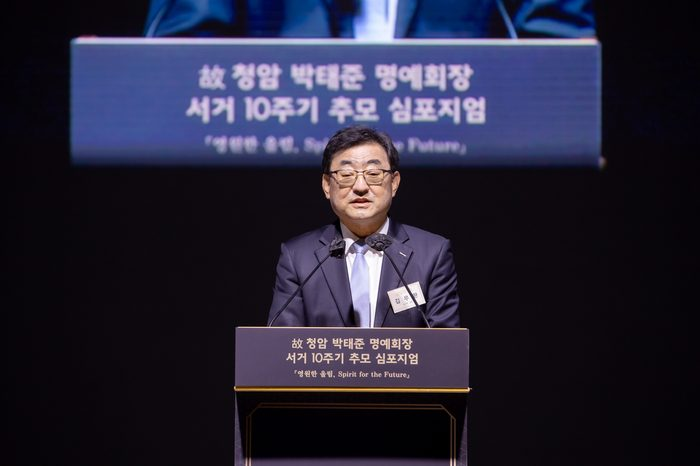
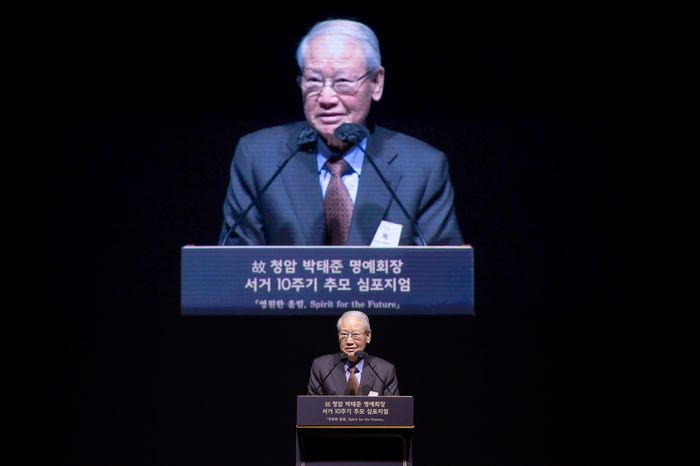
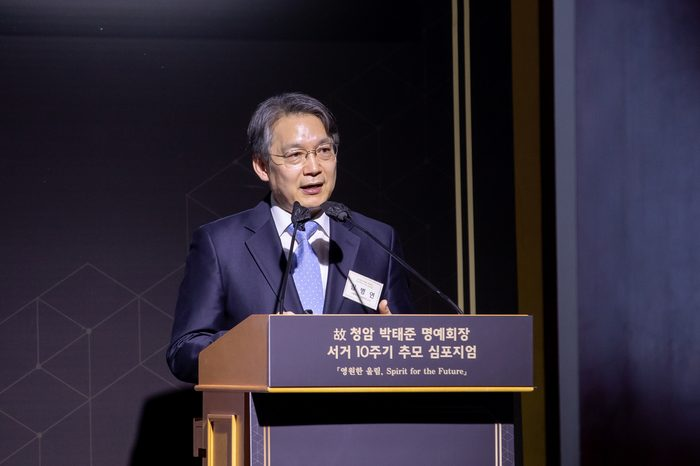
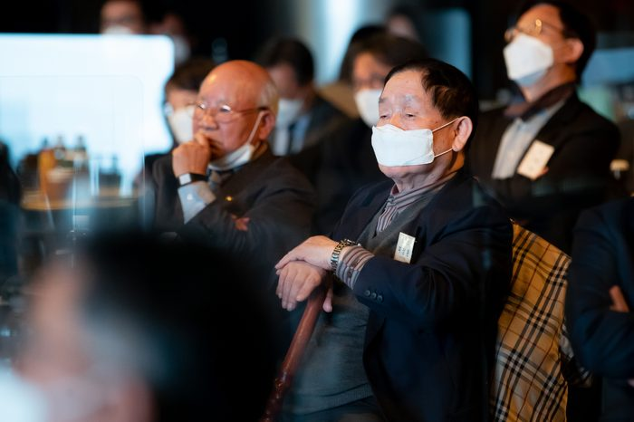
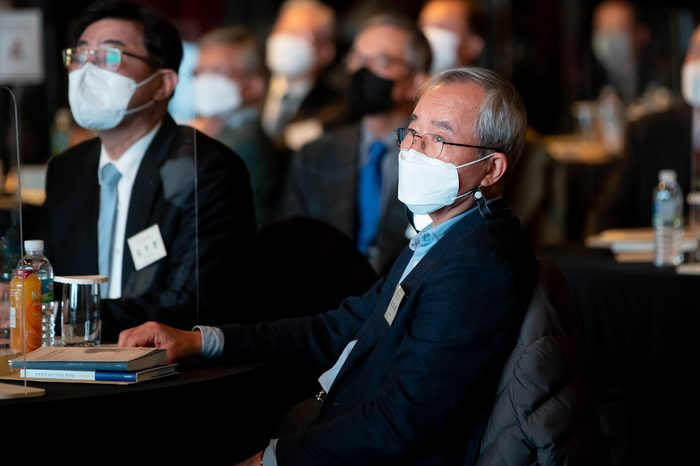
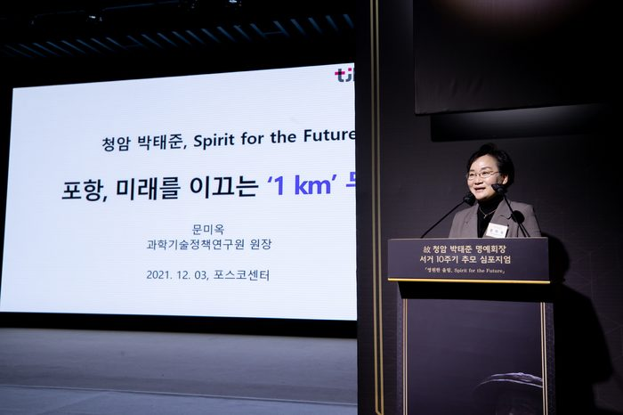
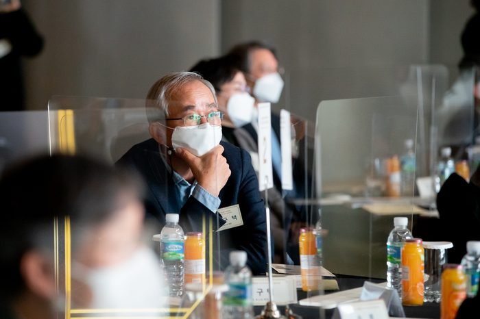
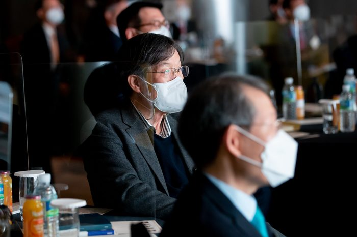
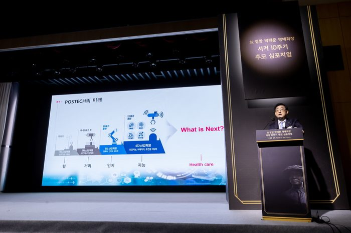
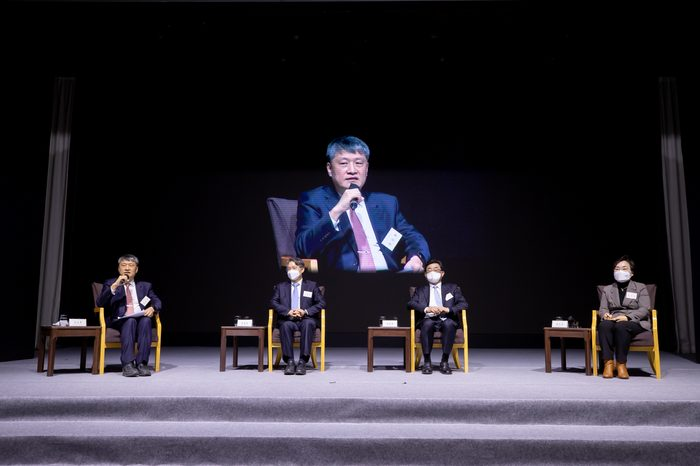
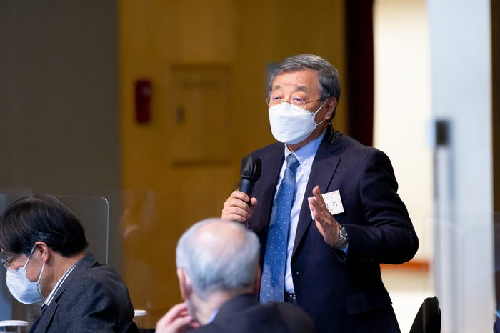
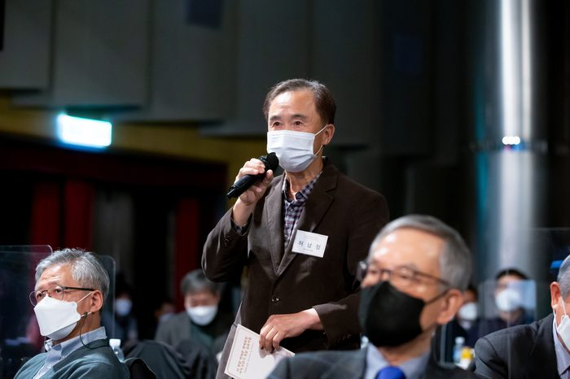
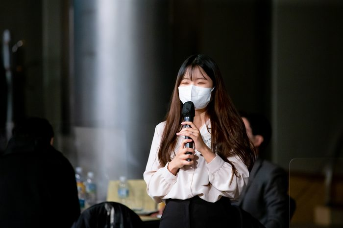
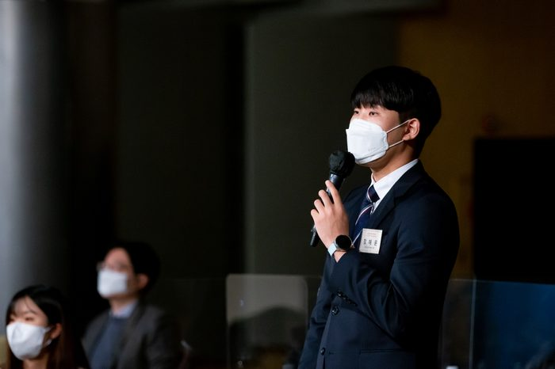
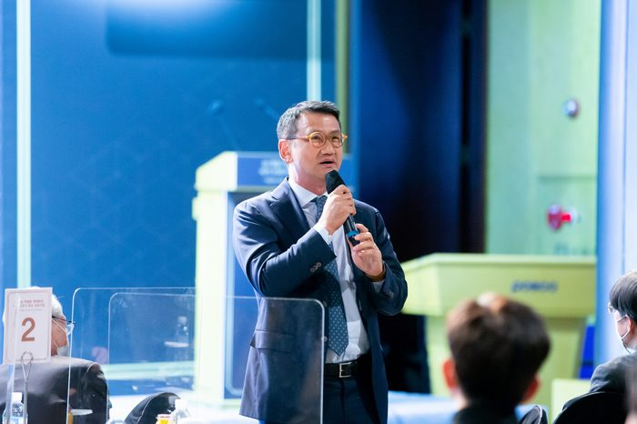
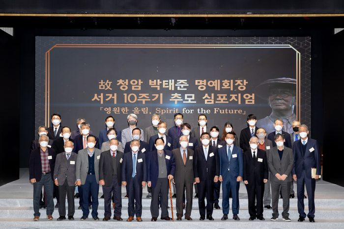
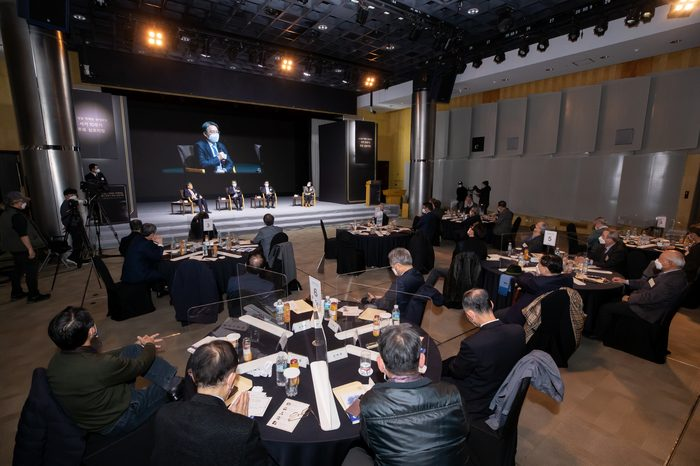